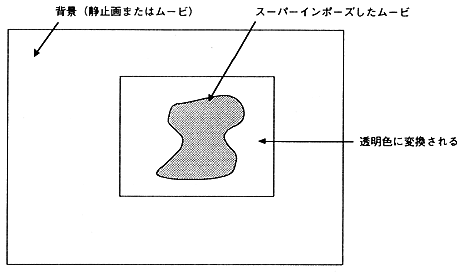

You can use a movie captured with a chroma key to superimpose a subject on another still image or movie background. Superimpose is realized by making a specific color specified by MovieToSaturn_J transparent when it is decoded on Saturn. Therefore, the background you want to make transparent must be a single color. A superimposing movie can be used with or without sound.

Figure 3.5 Superimpose
To superimpose, use the Adobe Premiere Color Replacement filter or Transparency Settings. (Refer to the Adobe Premiere manual for details on "Color Replacement" and "Transparency Setting")
● For the “Color Replacement” filter
- For example, for a movie with a blue background, select the blue background as the target color. Next, set the replacement color to “Red = 0, Green = 65536, Blue = 0” and replace it with pure green. Use the similarity slider or repeat replacement to make the background a pure green color. Be careful not to include the replacement color in the subject to be superimposed. If included, it may be pure red, white, black, etc. instead of green.
- When the color replacement is finished, the movie is Cinepak compressed.
- Next, when converting with MovieToSaturn_J, click the "Option" button, select the chroma key processing, and enter the color value to be keyed out (Figure 3.6). If the replacement color is pure green, input “Red = 0, Green = 255, Blue = 0” and then convert to Saturn format.
● In case of “Transparency setting”
In the construction window, a super-track movie is placed on the blue background, and a single blue still image that is keyed out is placed on the A track. After selecting the Super Track movie, open the Transparency Settings dialog and select Chroma as the key type. Use the similarity slider to adjust the background color so that it is clear and transparent. Now you can make a movie with the A track matte.
After that, perform steps 2 and 3 in the same way as “Color replacement”.